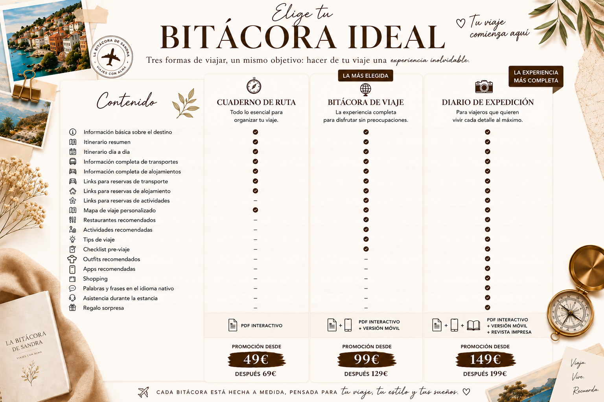

1. Cuéntame un poco sobre tu viaje ideal
Rellena el formulario con los detalles de ese viaje que tienes en mente: destino, fechas, presupuesto y tus preferencias. Cuanta más información me des, mejor podré diseñarlo a tu medida.
Ir al formularioLos mejores viajes empiezan con ilusión, pero también con muchas preguntas...
¿Qué lugares merece la pena visitar?
¿Cómo organizar la ruta?
¿Dónde alojarse?
¿Qué experiencias no pueden faltar?
¡Pero tranqui! Te ayudaré a resolver todas tus dudas. Para ello, te ofrezco tres tipos de guías personalizadas, diseñadas a medida y que reúnen toda la información, recomendaciones y planificación que necesites para disfrutar de cada destino al máximo.
Porque cada aventura es única, y podrás elegir el nivel de detalle y acompañamiento que mejor encaje con tus necesidades.
Ahora solo queda una decisión: ¿Qué bitácora te acompañará en tu próxima aventura?

Rellena el formulario con los detalles de ese viaje que tienes en mente: destino, fechas, presupuesto y tus preferencias. Cuanta más información me des, mejor podré diseñarlo a tu medida.
Ir al formularioMe pondré en contacto contigo según prefieras (WhatsApp, email o Instagram) para agendar una videollamada de 30 minutos. Hablaremos sobre tu idea de viaje y te explicaré cómo puedo ayudarte, junto con las tarifas.
Una vez confirmado, empiezo a trabajar en tu itinerario. Diseño cada detalle pensando en ti, tu estilo de viaje y cómo aprovechar al máximo cada día.
Te enviaré un PDF con todo lo necesario: opciones de transporte, alojamientos, actividades, restaurantes, mapas, consejos prácticos y enlaces directos para que puedas reservar fácilmente.
No estarás sola/o. Durante tu viaje contarás con mi apoyo para resolver dudas o imprevistos, para que solo tengas que centrarte en disfrutar.
La asesoría de viajes personalizada es un servicio en el que te ayudo a organizar un viaje totalmente adaptado a tus gustos, presupuesto y forma de viajar. En La Bitácora de Sandra creo itinerarios personalizados con recomendaciones de vuelos, alojamientos, rutas, actividades y consejos prácticos para que disfrutes del viaje sin perder horas organizándolo.
A diferencia de una agencia tradicional, mi servicio de asesoría de viajes personalizada está pensado para ayudarte a organizar un viaje adaptado a ti, sin paquetes cerrados ni precios inflados. Mientras que muchas agencias trabajan con viajes prefabricados y comisiones por reservas, yo busco las opciones que mejor encajan con tu presupuesto y forma de viajar.
Esto dependerá del servicio que quieras contratar, ya sea un Paquete de servicios o incluso puedes elegir servicios independientes, para lo que crearé un presupuesto adaptado a tus necesidades.
Desde escapadas de fin de semana a estancias de 2/3 semanas, un mes... Road trips, viajes de mochilero, viajes en pareja, viajes con amigos, viajes en familia con niños, itinerarios multicity, viajes sorpresa, lunas de miel y viajes de fin de curso. Me adaptaré a lo que necesites.
Puedes elegir un Paquete de servicios a un precio fijo (ver tarifas), o puedes solicitarme un presupuesto personalizado en base a los servicios que necesites.
Esto dependerá de la complejidad de la planificación (Paquete elegido, días de duración, extras solicitados). El tiempo estimado es de 3-7 días.
No realizo reservas directamente. Te envío los enlaces de las mejores opciones de vuelos, alojamientos y transporte para que puedas reservarlas tú mismo/a de forma sencilla y segura. ¡Pero te acompaño en el proceso de reserva si lo necesitas!
Por supuesto. Crearé un presupuesto personalizado para ti en base a lo que necesites.
Por más que suene extraño... ¡no! Basándome en mi experiencia, hay destinos mejores que otros según la temporada en la que decidas viajar. Dime en qué mes/temporada te gustaría viajar y te propondré diferentes destinos.
Porque a la hora de elaborar mis itinerarios he pensado hasta en el más mínimo detalle. Entre otros extras, te ofrezco recomendaciones de restaurantes, APPs que te pueden salvar de más de un apuro, recomendaciones de outfits para ir siempre preparado, impresión del PDF en versión revista, tarjetas de regalo para que tu viaje no acabe el día que regresas... ¡y muchas otras sorpresas!
¡Claro que sí! Y como persona bien coqueta que soy, te ofrezco la posibilidad de preparar un packaging de regalo ideal para que no solo el contenido sea una sorpresa inolvidable.
Sí. Mis itinerarios incluyen partida desde cualquier origen y a cualquier destino en el mundo.
Uno de los servicios que te ofrezco es la asistencia durante tu viaje. Te daré un teléfono de contacto al que podrás escribirme/llamarme si necesitas mi ayuda para cualquier imprevisto.
Sí. Entiendo que una vez recibidas las opciones que te ofrezco necesites cambiar/añadir otras alternativas. Según el cambio que se solicite podría conllevar un suplemento.
No. Una vez aceptes el presupuesto y yo comience a trabajar en tu itinerario no podrás solicitar el reembolso, puesto que ya habré invertido mi tiempo en ello.
Los métodos de pago aceptados, por el momento, son los siguientes: Bizum, transferencia bancaria y Paypal.